057 — Cloud Logging, Monitoring, Trace y Audit Logs
Parte: 04 — Google Cloud: plataforma esencial
Nivel: intermedio · Horas estimadas: 4
Laboratorio: observability · Estado: EXECUTABLE_CORE
🎯 Propósito
Construir la evidencia operativa de una plataforma de Google Cloud, donde el problema es el contrario al de la clase 045: aquí casi todo se registra desde el primer minuto, así que un incidente nunca se queda sin datos y la factura llega antes que la pregunta. Y donde existe la pieza que faltaba en las dos plataformas anteriores: alertar sobre el consumo del presupuesto de error en lugar de sobre umbrales de recursos, que es la diferencia entre 340 avisos al mes y once que importan.
📚 Resultados de aprendizaje
Al finalizar podrás:
- Distinguir qué registros están activos y son gratuitos de los que hay que habilitar y se pagan.
- Reducir la factura de ingesta con filtros de exclusión y destinos, sin perder capacidad de investigación.
- Convertir un patrón de registro en una métrica para alertar en un minuto en vez de en quince.
- Definir un SLI y un SLO, y alertar por velocidad de consumo del presupuesto de error.
- Reconstruir una petición completa entre servicios y localizar el salto que corta la traza.
🧩 Conceptos centrales
| Concepto | Comprensión verificable |
|---|---|
registro de auditoría de actividad de administrador |
Quién creó, modificó o borró qué. Está siempre activo, es gratuito y se conserva 400 días sin configurar nada — justo lo que en la clase 045 exigía exportar. |
registro de acceso a datos |
Quién leyó qué dato. Está apagado por defecto —salvo excepciones— y es el más voluminoso: habilitarlo en todo es la forma más rápida de multiplicar la factura. |
enrutador de registros |
Punto por el que pasa todo antes de almacenarse. Es donde se excluye antes de pagar y donde se decide el destino: bucket de registros, almacenamiento, BigQuery o Pub/Sub. |
métrica basada en registros |
Contador o distribución extraído de un patrón de texto. Convierte una señal que solo existe en los registros en una métrica sobre la que se alerta en un minuto. |
presupuesto de error |
Fracción de peticiones que el SLO permite fallar en un periodo. Alertar sobre su velocidad de consumo sustituye a los umbrales de CPU y elimina la mayoría de los avisos inútiles. |
perfilador continuo |
Muestreo de CPU y memoria en producción con sobrecarga mínima. Responde a «dónde se va el tiempo» sin reproducir nada en un entorno de pruebas. |
🧠 Modelo mental
Un proyecto de Google Cloud es la unidad práctica de API, cuota, IAM y facturación; la organización aporta la política heredable.
Aplicado a esta clase, separa siempre cuatro planos: intención (qué necesita el usuario), configuración (qué declaramos), estado observado (qué existe de verdad) y evidencia (cómo sabemos que cumple). Confundirlos produce diseños que se ven correctos en un diagrama pero fallan al operar.
🗺️ Flujo de razonamiento

📖 Desarrollo
1. Aquí el problema no es la falta de datos, es la factura
La clase 045 empezaba con una frase que aquí no vale: «nada se registra hasta que alguien lo enciende». En Google Cloud el reparto es el contrario, y conviene conocerlo con precisión porque decide dónde está el riesgo.
siempre activo y GRATUITO
auditoría de actividad de administrador quién creó, modificó o borró
auditoría de eventos del sistema acciones de la propia plataforma
→ se guardan 400 días en el bucket _Required, que no se puede modificar
activo y facturado
registros de aplicación y de la mayoría de servicios
registros de peticiones de los balanceadores y de Cloud Run
auditoría de política denegada
APAGADO por defecto
auditoría de ACCESO A DATOS: quién leyó qué
La primera línea resuelve de fábrica el problema que la clase 045 tuvo que resolver exportando a almacenamiento inmutable: quién borró un recurso hace cuatro meses tiene respuesta, sin haber configurado nada, y sin que nadie pueda borrar esa respuesta.
$ gcloud logging read 'protoPayload.methodName:"delete" AND
timestamp>="2026-04-01T00:00:00Z"' --limit 20 \
--format="table(timestamp, protoPayload.authenticationInfo.principalEmail,
protoPayload.methodName, protoPayload.resourceName)"
La tercera línea es la asimetría propia, y es una decisión con precio. Los registros de acceso a datos responden a «quién leyó la tabla de clientes», que es la pregunta de cualquier investigación sobre datos personales — y son, con diferencia, los más voluminosos, porque hay muchas más lecturas que cambios de configuración.
$ gcloud projects get-iam-policy $PROYECTO --format=json > politica.json
# habilitar SOLO donde importa, no en toda la organización
El criterio que evita la factura sin renunciar a la evidencia: habilitarlos por servicio y por proyecto, en los que contienen datos personales o financieros, y dejarlos apagados en el resto. Activarlos en la organización entera «por si acaso» es la forma más rápida de multiplicar el gasto de telemetría por varias veces.
Y el modelo de precios, que cambia lo que es razonable guardar:
ingesta ~0,50 USD por GiB
retención 30 días incluidos en _Default; más allá, por GiB y mes
_Required gratis, 400 días, no configurable
métricas de plataforma gratuitas
Compararlo con la clase 045 explica por qué el diseño cambia: allí la ingesta costaba unas cuatro veces más, así que la palanca era el plan por tabla. Aquí la ingesta es más barata y el volumen es mayor porque todo está encendido, de modo que la palanca principal es otra: descartar antes de ingerir.
2. El enrutador: excluir antes de pagar, archivar lo que solo se guarda
Todo registro pasa por el enrutador antes de almacenarse, y ahí hay dos operaciones distintas que se confunden:
destino (sink) copia los registros que coinciden hacia un destino
→ se paga la ingesta en el destino que corresponda
exclusión DESCARTA antes de almacenar
→ no se paga
La exclusión es la que baja la factura. Y se escribe con el mismo lenguaje de filtro que las consultas:
$ gcloud logging sinks update _Default \
--add-exclusion=name=peticiones-correctas,\
filter='resource.type="cloud_run_revision" AND httpRequest.status<400'
$ gcloud logging sinks update _Default \
--add-exclusion=name=flujos-vpc-muestreo,\
filter='resource.type="gce_subnetwork" AND log_id("compute.googleapis.com/vpc_flows")
AND sample(insertId, 0.05)'
La segunda usa muestreo: conserva el 5 % de los registros de flujo de la clase 051 y descarta el resto. Para detectar patrones de tráfico, una muestra basta; para una investigación forense concreta, no — y ahí es donde entra el archivo barato:
$ gcloud logging sinks create archivo-crudo \
storage.googleapis.com/projects/$P/buckets/cls-registros-crudos \
--log-filter='resource.type="gce_subnetwork" OR resource.type="http_load_balancer"'
Ese destino escribe a Cloud Storage, donde el GB cuesta una fracción y las reglas de ciclo de vida de la clase 053 lo retiran solas. La combinación resuelve las dos necesidades sin pagar dos veces:
lo que se consulta a diario en el bucket de registros, con retención corta
lo que se consulta una vez en Cloud Storage, barato, con ciclo de vida
lo que no se consulta nunca excluido: no se paga
La tercera línea exige una comprobación honesta que casi nadie hace: mirar qué se ha consultado de verdad en los últimos noventa días. Un tipo de registro que nadie ha buscado nunca es candidato a exclusión o a archivo, y esa revisión es la que convierte la reducción de costo en una decisión con datos en vez de en un recorte a ciegas.
Y para el análisis, Log Analytics convierte un bucket de registros en algo consultable con SQL, lo que evita mover los datos a otro sitio solo para poder agregarlos:
SELECT
JSON_VALUE(resource.labels.service_name) AS servicio,
COUNT(*) AS peticiones,
COUNTIF(CAST(JSON_VALUE(http_request.status) AS INT64) >= 500) AS errores
FROM `cls-obs.global._Default._AllLogs`
WHERE timestamp > TIMESTAMP_SUB(CURRENT_TIMESTAMP(), INTERVAL 1 HOUR)
GROUP BY servicio ORDER BY errores DESC
Y un límite del enrutador que produce una sorpresa: las exclusiones se aplican al bucket de destino, no al origen. Un registro excluido de _Default sigue llegando a otros destinos que lo seleccionen. Es lo que se quiere —excluir del caro y archivar en el barato— y hay que tenerlo presente al calcular el ahorro.
3. Alertar por presupuesto de error, no por umbral de recurso
Esta es la pieza que las clases 034 y 045 no tenían y que cambia la operación más que ninguna otra de la parte.
El problema con las alertas de umbral es conocido: la CPU al 85 % puede ser perfectamente normal, y el 40 % puede ser catastrófico si la mitad de las peticiones fallan. Un panel lleno de avisos que nadie atiende no es vigilancia, es ruido con guardia.
Google Cloud modela el objetivo directamente:
SLI indicador: proporción de peticiones buenas sobre el total
SLO objetivo: 99,9 % en 28 días
presupuesto de error 0,1 % de las peticiones
con 10 M de peticiones al mes → 10.000 peticiones pueden fallar
Y la alerta se define sobre la velocidad a la que se consume ese presupuesto:
velocidad de consumo = tasa de error observada / tasa que agota justo el presupuesto
velocidad 1 a este ritmo, el presupuesto se agota exactamente al final del periodo
velocidad 14,4 el presupuesto de 28 días se agota en 2 días
→ si dura una hora, ya se ha gastado el 2 % del mes
La configuración estándar usa dos ventanas, y su lógica merece entenderse porque es lo que elimina el ruido:
ventana corta + velocidad alta (5 min, ×14,4) incidente agudo → avisar YA
ventana larga + velocidad baja (6 h, ×1) degradación lenta → avisar,
pero sin urgencia
y se exige que AMBAS ventanas coincidan
→ un pico de 30 segundos no dispara nada
→ una degradación sostenida sí
$ gcloud alpha monitoring policies create --policy-from-file - <<'YAML'
displayName: "Consumo rápido del presupuesto de error · tienda"
conditions:
- displayName: "velocidad de consumo > 14,4 en 5 min y 1 h"
conditionThreshold:
filter: 'select_slo_burn_rate("projects/…/services/tienda/serviceLevelObjectives/disponibilidad-999", "3600s")'
comparison: COMPARISON_GT
thresholdValue: 14.4
duration: 300s
YAML
Lo que se gana no es solo menos ruido. Se gana que cada alerta corresponde a algo que el usuario nota, y que la urgencia está calibrada: una alerta de velocidad 14,4 significa que si nadie hace nada en dos días no queda presupuesto, lo que es una frase que un responsable de guardia puede entender a las tres de la madrugada. «CPU al 85 %» no lo es.
Y las alertas de umbral no desaparecen: se quedan para lo que sí es un límite duro, que es distinto de una degradación:
SLO / presupuesto de error la experiencia del usuario
umbral cuotas, disco lleno, certificado que caduca,
conexiones al máximo, mensajes fallidos > 0
La segunda columna incluye la alerta que este programa ha justificado en tres plataformas: trabajo que se acumula. Un consumidor detenido no consume presupuesto de error de un servicio HTTP, así que un sistema que solo vigile el SLO de la API no lo detecta.
Y para lo que solo existe en los registros, la métrica basada en registros cierra el hueco que la clase 045 dejó abierto —allí, alertar sobre un registro costaba entre siete y veinte minutos—:
$ gcloud logging metrics create errores-cobro \
--description "Excepciones del servicio de cobro" \
--log-filter='resource.type="cloud_run_revision"
AND resource.labels.service_name="svc-pagos"
AND severity>=ERROR AND jsonPayload.tipo="CobroRechazado"'
Una vez extraída, es una métrica normal: se alerta sobre ella en aproximadamente un minuto, con el mismo mecanismo rápido que cualquier otra.
4. Trazas, errores y dónde se va el tiempo
Tres herramientas responden tres preguntas distintas, y las tres están integradas sin montar nada.
Cloud Trace reconstruye la petición completa entre servicios. La correlación viaja en la cabecera estándar del W3C —o en la propia de Google— y tiene la misma condición que en la clase 045: cada salto debe propagarla.
X-Cloud-Trace-Context: TRACE_ID/SPAN_ID;o=1
traceparent: 00-<trace-id>-<span-id>-01
Y el mismo síntoma cuando falta: la traza se corta justo en el servicio interno que se escribió a mano, que es normalmente el interesante. La comprobación es directa —buscar una traza y contar los tramos esperados— y conviene hacerla el día que se despliega un servicio nuevo, no durante un incidente.
En Cloud Run hay un detalle que ahorra trabajo: la plataforma ya emite un tramo por petición, así que el mapa básico existe sin instrumentar nada. Lo que hay que añadir es la propagación entre servicios propios y los tramos de las llamadas a bases de datos, que es donde suele estar el tiempo.
Error Reporting agrupa las excepciones por firma y cuenta ocurrencias, primera y última vez. Sustituye a buscar cadenas en los registros y responde a la pregunta que abre casi todo incidente de aplicación: qué ha empezado a fallar ahora que antes no fallaba. Funciona sin configuración si las excepciones se escriben con la severidad y el formato adecuados, lo que es un argumento concreto para registrar en estructura y no en texto libre:
import json, sys
print(json.dumps({
"severity": "ERROR",
"message": str(exc),
"stack_trace": traceback.format_exc(),
"logging.googleapis.com/trace": f"projects/{proyecto}/traces/{trace_id}",
}), file=sys.stderr)
Ese campo de traza es el que enlaza el error con su petición completa: desde la excepción se llega a la traza, y desde la traza a la dependencia que la causó. Es la cadena que la clase 034 pedía y que aquí cuesta una línea.
Cloud Profiler responde a una pregunta que ninguna de las plataformas anteriores contestaba en producción: dónde se va el tiempo de CPU y la memoria. Muestrea continuamente con una sobrecarga muy baja y presenta el resultado como gráfico de llamas.
import googlecloudprofiler
googlecloudprofiler.start(service="svc-tienda", service_version="v8")
Su valor es que encuentra cosas que nadie buscaría: un serializador que consume un tercio de la CPU, una expresión regular recompilada en cada petición, una biblioteca de fechas que domina el perfil. Son mejoras que no aparecen en ninguna traza porque están dentro de un tramo, y que suelen tener una corrección de pocas líneas.
Y el Servicio Gestionado para Prometheus merece mención porque decide el diseño de la parte 06: Google Cloud ingiere métricas en formato Prometheus de forma nativa, con consultas en PromQL. Eso significa que la instrumentación de una aplicación no es específica del proveedor: las mismas métricas y los mismos paneles valen aquí, en un clúster propio o en otra nube. Es exactamente el tipo de contrato portable que la clase 048 pedía identificar, y aparece en la capa donde más veces se pierde.
5. El método, ya idéntico en tres plataformas
Con tres proveedores recorridos, el procedimiento de investigación ya no es una receta por producto. Es el mismo, y solo cambia el nombre del comando:
1. ¿el usuario lo nota? SLO y presupuesto de error, no CPU
2. ¿desde cuándo? percentil de latencia y tasa de error en serie
3. ¿qué cambió en la ventana? auditoría de administrador + despliegues
4. ¿qué traza lo demuestra? una petición fallida, de extremo a extremo
5. ¿qué dependencia? tramos de la traza, o errores agrupados
6. ¿quién y con qué permiso? auditoría, y el sistema de identidad (050)
Y las consultas de cada paso se escriben una vez y se guardan, por la razón que la clase 045 ya dio: un incidente no es el momento de aprender a consultar.
# 3. qué cambió en las últimas 6 horas
$ gcloud logging read 'logName:"cloudaudit.googleapis.com%2Factivity"
AND timestamp>="'$(date -u -d "6 hours ago" +%Y-%m-%dT%H:%M:%SZ)'"' \
--format="table(timestamp, protoPayload.authenticationInfo.principalEmail,
protoPayload.methodName, resource.labels.service_name)"
Y la comparación de las tres plataformas en observabilidad, que es lo que se lleva a la clase 060:
```text AWS (034) Azure (045) Google (057) registros de recurso parcial APAGADOS activos auditoría, retención gratuita 90 días 90 días 400 días precio de ingesta medio ~2,30 USD/GiB ~0,50 USD/GiB registros de acceso a datos opcionales opcionales apagados, caros alerta rápida sobre registros métrica ~9 min métrica de registro SLO y presupuesto de error se construye se construye INTEGRADO perfilado en producción aparte aparte INTEGRADO
Dos filas van claramente a favor de esta plataforma y una en contra —los registros de acceso a datos apagados, que es la versión local del error de la clase 045—. Y la fila del SLO es la que más cambia la operación diaria, porque no es una herramienta más: **es la que decide qué despierta a alguien**.
Un cierre que conviene dejar escrito para el proyecto de la clase 060: la observabilidad no se juzga por cuántos paneles hay, sino por dos números que se pueden medir en un simulacro —**cuánto tarda en detectarse un fallo y cuánto en localizar su causa**—. Todo lo de esta clase existe para bajar esos dos números, y cualquier pieza que no lo haga es decoración que cuesta dinero al mes.
## 🔬 Ejemplo trabajado
**CloudShop instrumenta su plataforma de Google Cloud. El incidente que abrió la clase 045 —una caída sin datos que analizar— no se reproduce: los registros estaban. Los cinco problemas de este mes son de otra naturaleza.**
**Lo que no se reprodujo.**
```text
en Azure 48 minutos de caída sin ningún registro del plano de datos,
porque las configuraciones de diagnóstico estaban apagadas
aquí los registros de la petición, del balanceador y de la auditoría
estaban desde el primer minuto, sin configurar nada
tiempo hasta identificar la causa raíz 23 minutos
Problema 1 — la factura de telemetría, en el día doce.
SELECT log_name, ROUND(SUM(bytes)/POW(1024,3), 1) AS gib
FROM `cls-obs.global._Default._AllLogs` …
flujos de VPC (clase 051) 31 GiB/día 50 %
peticiones de Cloud Run, todas 18 GiB/día 29 %
balanceador, incluidas las 2xx 9 GiB/día 15 %
resto 4 GiB/día 6 %
──────────
62 GiB/día → ~930 USD/mes
El 94 % del gasto eran registros que nadie había consultado nunca. La comprobación se hizo mirando el historial de consultas, no por intuición.
```text antes después flujos de VPC 31 GiB/día 1,6 GiB/día (muestreo 5 %) el volumen íntegro va a Cloud Storage con ciclo de vida a 30 días peticiones de Cloud Run 18 GiB/día 3,1 GiB/día (solo >= 400) balanceador 9 GiB/día 1,4 GiB/día (solo >= 400) resto 4 GiB/día 4 GiB/día ────────── ────────── ingesta 62 GiB/día 10,1 GiB/día costo mensual de ingesta ~930 USD ~152 USD archivo en Cloud Storage — ~19 USD
Capacidad de investigación perdida: ninguna. Lo excluido sigue existiendo, más barato y más lento de consultar.
**Problema 2 — «¿quién leyó la tabla de clientes?» no tenía respuesta.**
Una consulta de cumplimiento pregunta por accesos a datos personales de los tres meses anteriores.
```bash
$ gcloud logging read 'protoPayload.methodName="google.cloud.bigquery.v2.JobService.InsertJob"
AND protoPayload.resourceName:"clientes"' --limit 5
# (vacío para los servicios distintos de BigQuery)
Los registros de acceso a datos estaban apagados, que es su valor por defecto. Se habilitan de forma selectiva, con la aritmética delante:
```text si se habilita en todo selectivo volumen añadido estimado +48 GiB/día +2,3 GiB/día costo añadido +720 USD/mes +35 USD/mes cobertura todo los 4 proyectos con datos personales
Treinta y cinco dólares al mes por poder responder la pregunta que importa. Setecientos veinte por poder responder también las que nadie hace.
**Problema 3 — 340 alertas al mes y ninguna correspondía a un usuario afectado.**
```text
alertas del mes anterior 340
de ellas, con impacto en usuarios 6
de ellas, atendidas 31
de ellas, silenciadas 46
El resto se ignoraron. Se sustituyen los umbrales de recurso por objetivos de servicio:
SLI peticiones con estado < 500 y latencia < 800 ms / total
SLO 99,9 % en 28 días
presupuesto de error 0,1 % → ~10.200 peticiones al mes
alertas velocidad ×14,4 en ventanas de 5 min y 1 h → aviso inmediato
velocidad ×1 en ventanas de 6 h y 3 días → aviso sin urgencia
```text antes después alertas al mes 340 11 con impacto real en usuarios 6 11 falsos positivos 334 0 alertas silenciadas 46 0 tiempo medio hasta la detección 19 min 3 min 40 s
Once alertas, once incidentes reales. Y se conservan seis alertas de umbral para lo que sí es un límite duro: cuota al 80 %, disco al 70 %, certificado a 30 días, conexiones al 85 %, mensajes fallidos mayor que cero y acumulación en cola — la última, por tercera vez en el programa.
**Problema 4 — la traza se cortaba en el servicio de precios.**
```text
tramos esperados en una petición de pedido 6
tramos observados 3
el corte, siempre en la llamada a svc-precios
El cliente HTTP de ese servicio se había escrito a mano y no reenviaba la cabecera de traza. Tercera vez que este fallo aparece en el programa, con la misma corrección.
```text antes después propagación de la cabecera 4 de 6 saltos 6 de 6 tiempo hasta localizar una dependencia lenta ~25 min ~3 min comprobación de continuidad de traza ninguna en el despliegue de cada servicio
**Problema 5 — el 38 % de la CPU estaba en un sitio que nadie habría mirado.**
Con el perfilador activo una semana:
```text
serialización a JSON del catálogo completo 38 % del tiempo de CPU
causa: se serializaba el objeto entero para devolver 4 campos
```text antes después CPU en serialización 38 % 6 % p95 del listado de catálogo 214 ms 131 ms instancias en el pico 9 5 costo mensual de Cloud Run 31 USD 19 USD
Una corrección de once líneas, encontrada porque el perfilador estaba encendido y no porque nadie sospechara.
**Resumen de la observabilidad:**
```text antes después
ingesta diaria 62 GiB/día 10,1 GiB/día
costo mensual de telemetría 930 USD 206 USD
registros de acceso a datos apagados activos en 4 proyectos
alertas al mes 340 11
falsos positivos 334 0
tiempo medio hasta la detección 19 min 3 min 40 s
propagación de traza 4 de 6 saltos 6 de 6
La lección que esta clase traslada al proyecto de la clase 060: el problema de la observabilidad cambia de forma según la plataforma —en la parte 03 era la ausencia de datos, aquí es su exceso— y no cambia el criterio. En ambos casos la pregunta correcta es la misma: ¿qué señal necesito para responder a un incidente, y qué estoy pagando que nunca he consultado? La respuesta se obtiene mirando el historial de consultas, y casi siempre sorprende.
🧪 Laboratorio guiado
Ejecuta desde la raíz:
python classes/part-04-gcp-core-platform/057-cloud-logging-monitoring-trace-y-audit-logs/lab.py
El laboratorio selecciona el motor de práctica observability y produce
lab_result.json. El escenario, sus comprobaciones y el artefacto esperado corresponden a
esta clase; no requiere credenciales y deja explícito qué debe revalidarse en un sandbox real.
- Lee
exercise.stepsy formula una predicción antes de ejecutar. - Ejecuta la práctica y verifica todos los elementos de
checks. - Provoca el caso de
negative_testy explica la señal observada. - Materializa
evidencia-operativa-gcpenevidence/usando la plantilla indicada. - Para proveedor real, sigue
sandbox.requires, registra costo y ejecutadestroy.
Evidencia esperada
El artefacto principal es telemetría correlacionada con una pregunta operativa. Además, la entrega debe incluir el comando ejecutado, la salida estructurada y una conclusión que no exceda lo observado.
🏆 Reto verificable
Construye evidencia-operativa-gcp para el caso CloudShop. Incluye una alternativa descartada,
un supuesto que pueda falsarse, una prueba de fallo y una decisión de rollback.
✅ Criterio de aceptación
- [ ]
lab.pytermina con código 0 y genera JSON válido. - [ ] La entrega conecta al menos tres requisitos con mecanismos verificables.
- [ ] Existe una prueba positiva y una prueba negativa con evidencia.
- [ ] Seguridad, costo y operación aparecen como decisiones, no como anexos.
- [ ] Se declara una limitación y una condición que obligaría a revisar el diseño.
- [ ] Otra persona puede repetir el recorrido sin conocimiento tácito.
⚠️ Errores frecuentes
| Síntoma | Causa probable | Corrección |
|---|---|---|
| La factura de telemetría es varias veces la prevista desde el primer mes | Casi todo se registra por defecto, incluidos los flujos de red y las peticiones correctas | Excluye en el enrutador antes de ingerir, muestrea lo voluminoso y archiva el volumen íntegro en Cloud Storage con ciclo de vida. |
| No se puede saber quién leyó un dato personal | Los registros de auditoría de acceso a datos están apagados por defecto | Habilítalos de forma selectiva en los proyectos y servicios con datos sensibles, no en toda la organización. |
| Cientos de alertas al mes y casi ninguna corresponde a impacto real | Se alerta sobre umbrales de recursos en vez de sobre la experiencia del usuario | Define SLI y SLO y alerta por velocidad de consumo del presupuesto de error, con dos ventanas que deban coincidir. |
| Una alerta basada en registros llega demasiado tarde | Se evalúa como consulta programada, con la latencia acumulada de la clase 045 | Convierte el patrón en una métrica basada en registros y alerta sobre ella como sobre cualquier métrica. |
| La traza se corta siempre en el mismo servicio | Ese salto no propaga la cabecera de contexto de traza | Propágala en todos los clientes HTTP y comprueba el número de tramos al desplegar cada servicio. |
| Se optimiza el servicio y la latencia no mejora | El tiempo se va dentro de un tramo, donde ninguna traza lo muestra | Activa el perfilador continuo en producción: su sobrecarga es mínima y localiza el consumo real. |
🛡️ Seguridad, ética y costo
Trabaja con cuentas propias o sandboxes autorizados. No publiques secretos, identificadores reales ni datos personales. Antes de crear recursos pagos define presupuesto, etiquetas y comando de destrucción; después verifica que no queden recursos huérfanos. Los ejemplos locales enseñan contratos, pero no certifican cumplimiento ni disponibilidad de producción.
❓ Preguntas de comprobación
- ¿Qué registros están activos y son gratuitos aquí, y qué problema concreto de la clase 045 resuelven?
- ¿Cuál es la diferencia entre un destino y una exclusión en el enrutador, y cuál baja la factura?
- Explica qué significa una velocidad de consumo de 14,4 y por qué se exigen dos ventanas coincidentes.
- ¿Qué tipo de alerta sigue necesitando un umbral aunque exista el presupuesto de error?
- ¿Qué pregunta responde el perfilador que ninguna traza puede responder, y por qué?
🔗 Referencias
- Google Cloud (2025). Cloud Audit Logs overview — tipos, cuáles están activos y cuáles se pagan. https://cloud.google.com/logging/docs/audit
- Google Cloud (2025). Routing and storage overview — enrutador, destinos, exclusiones y buckets
_Requiredy_Default. https://cloud.google.com/logging/docs/routing/overview - Google Cloud (2025). Log-based metrics — contadores y distribuciones extraídos de registros. https://cloud.google.com/logging/docs/logs-based-metrics
- Google Cloud (2025). SLO monitoring and burn rate alerts — SLI, SLO, presupuesto de error y ventanas múltiples. https://cloud.google.com/stackdriver/docs/solutions/slo-monitoring
- Google Cloud (2025). Cloud Profiler concepts — muestreo continuo en producción y su sobrecarga. https://cloud.google.com/profiler/docs/concepts-profiling
- Documentación oficial vigente del servicio implementado; registra URL y fecha de consulta.
📥 Descargar: Parte 04 en PDF · Recorrido de Google Cloud en PDF · Manual integral